Instruction manual for the virtual pet and its Game Boy Advance edition
An unofficial manual. No original manual was available, so everything in it was
reconstructed from the toy's own program: it was run on an emulator, its screens were recorded and
its code was read. All screen pictures are taken from the real program.
Contents
1. Welcome to Elfin Twins
2. Getting to know your toy
3. The screen and its icons
4. Getting started
5. The home screen and the menu
6. Food and drink
7. Games
8. Cleaning
9. The status meter
10. Outings
11. Light and bedtime
12. The doctor
13. Going out
14. The attention call "?!"
15. A day in the life of the twins
16. Growing up
17. When things go wrong
18. Playing with a friend (link)
19. Clock, sound and password
20. Money
21. Game Boy Advance edition
22. Who made Elfin Twins?
23. Quick reference
1. Welcome to Elfin Twins
Elfin Twins is a pocket virtual pet from the late 1990s. Instead of one creature you look after a
pair of little elves, the twins. They arrive at the end of a short story, grow up from babies to
adults over about three and a half weeks, live in a house at the edge of a town and like to go out:
to the town and, when they are older, to the running track.
You feed them and give them drinks, keep them clean, put them to bed, call the doctor when they are
ill and keep them busy with games, outings and TV. Everything you do changes their mood, intelligence,
stamina, friendships, weight and money, and you can check all of these on the status meter.
With a second toy you can connect the two and let the twins play tug-of-war, rock-paper-scissors or
arm wrestling against a friend's twins.
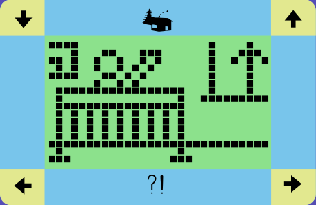
The twins at home (babies, first day).
About this manual. Each rule is marked with the source it was taken from. Most
come straight from the toy's program, others from watching the emulated toy. Where the purpose of
something could only be guessed, the manual says so.
2. Getting to know your toy
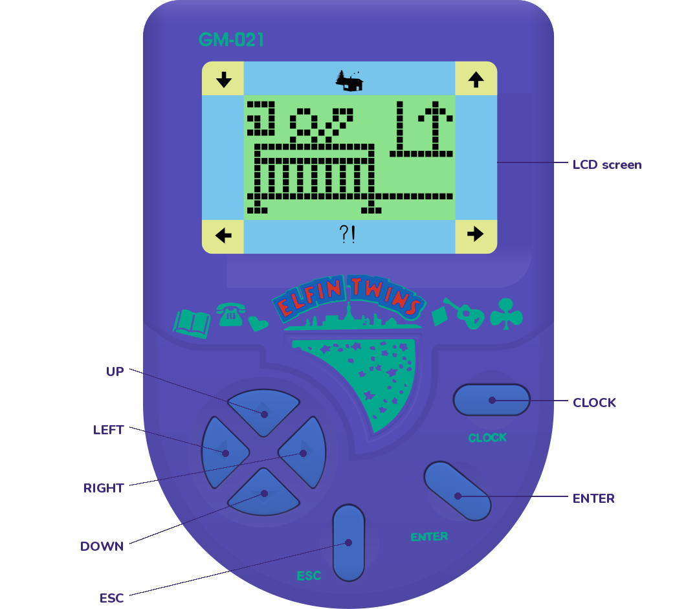
Button
What it does
◄►
Move the menu cursor, browse choices, change values.
▲
Choose where the twins go (home, town, running track).
▼
Cancel the choice of destination.
ENTER
Select / confirm. Held down for about 2 s it is a "long ENTER".
ESC
Go back / leave a screen.
CLOCK
Show the clock. Hold it for about 2 s to stop and set the clock.
ESC+ENTER
Pressed together: emergency rescue, or start a new pair of twins (see chapter 17).
Inside the toy. The toy has only five button contacts. ▲ presses LEFT and RIGHT
together and ▼ presses CLOCK and ENTER together, and the program tells them apart by which contacts
close. A tiny buzzer plays the tunes and a two-wire socket connects two toys.
3. The screen and its icons
The middle of the screen is a grid of 29 × 16 dots where the twins, their home and all the
animations appear. Around it are 16 printed icons that light up when needed. The picture below shows
every icon lit at once, which never happens in normal play.
Where
Icons
Meaning
Top row
Office / town · Home · Running track
Where the twins are, and their destination while you choose one.
Left column
Food & drink · Games · Clean
The eight menu icons. One is lit while you move the cursor.
Right column
Light · Outings · Doctor
Bottom row
Status meter · Link
Bottom middle
?!
The twins need something (chapter 14).
Corners
▼ ▲ ◄ ►
Which buttons can be used right now.
4. Getting started
The story
When batteries go in (or after a reset) the toy tells a short picture story that lasts about two and a half
minutes. It ends with the twins arriving in their new home as babies. The buttons are not used during the
story, so just watch.
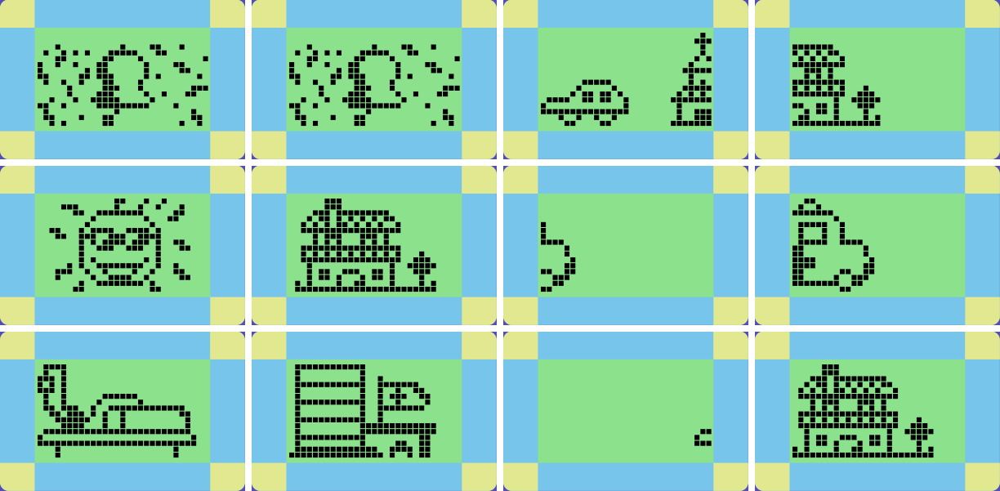
Scenes from the opening story.
Signing your name
At the end of the story the toy asks you to SIGN NAME: you can sign with up to 10 letters.
◄/► choose a letter (A–Z, a space and a few symbols).
ESC accepts the letter and moves on to the next one.
ENTER finishes. If you do nothing, the twins move in after about half a minute anyway.
SIGN NAME and the first letter.
Setting the clock
The toy starts at 12:00. Set the real time, because the twins' day (mealtimes, bedtime, going
out) follows the clock.
Press CLOCK to show the clock.
Hold CLOCK for about 2 seconds. The screen shows CLOCK STOP and time stands still.
Press ESC to start setting the time.
◄ adds one hour, ► adds one minute. Keep pressing until the time is right.
Press ENTER. The clock starts at 0 seconds and the password screen NEW P.W. appears (chapter 19).
Leave it at 00 for no password and press ENTER.
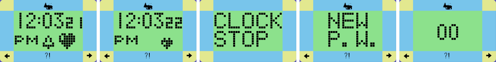
Clock screen (with the sound bell), sound off, CLOCK STOP, NEW P.W., password digits.
Tip: "CLOCK STOP" also works as a pause. While it is shown, time does not run
and the twins do not get older or hungrier.
5. The home screen and the menu
Most of the time you see the twins in their surroundings, going about their day. What they do depends on
their age, where they are and the time of day. Now and then they call for attention with ?! and
act out what they need: yawning when sleepy, a mess when things need cleaning, or looking poorly when
they are sick.
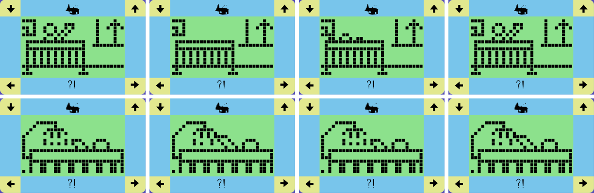
A few moments at home.
Using the menu
Press ◄ or ► and one of the eight menu icons lights up. Each
press moves to the next icon, round the screen in this order:
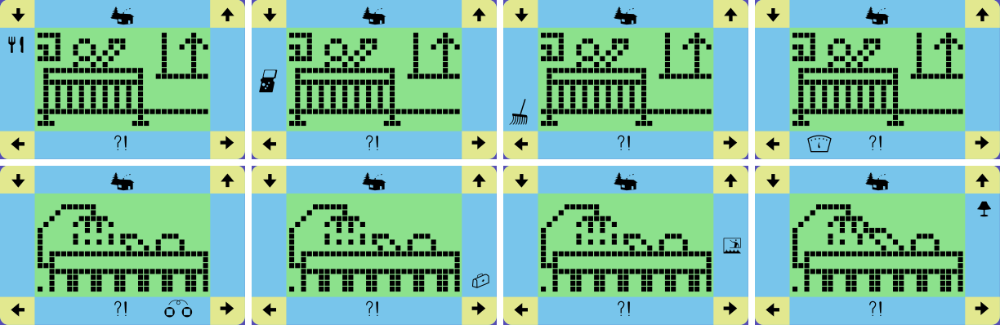
Food & drink → Games → Clean → Status meter → Link → Doctor → Outings → Light.
Press ENTER to open the lit icon. Inside a screen, ◄/►
browse, ENTER chooses and ESC goes back. If you leave the toy alone for
two minutes inside a screen, it goes back to the home screen by itself.
Tip: While the twins are in the middle of an animation, a button press is
sometimes ignored. Just press it again.
6. Food and drink
Open Food & drink (knife and fork). Three things to eat or drink are offered and the screen
moves from one to the next every few seconds. Wait for the one you want, or pick it with
◄/►, then press ENTER. Press
ESC to leave.
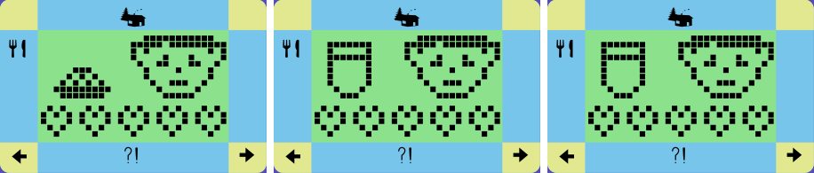
The three choices for babies at home.
Choice
What it does
Left and right: meals
Fill the tummy and give + stamina. Some meals
also add weight. When the tummy is full (after about five meals) the twins refuse more food.
Middle: drinks
Quench thirst and give + stamina. Always accepted.
For older twins at home the drink is a stronger one (probably coffee): + IQ− mood, and it costs $100.
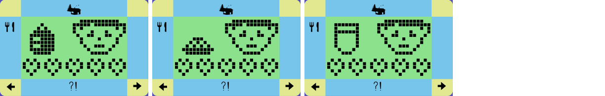
Dinner time.
What is offered depends on the twins' age (babies and children, or teenagers and adults) and on whether
they are at home or out in town. At the running track they refuse to eat.
Tip: In the morning the twins wake up with an empty tummy and thirsty, so give them
breakfast and a drink. Over the day they digest, and a digested meal eventually means a mess to clean.
7. Games
Open Games (the little handheld console). Choose one of the two games with
◄/► and press ENTER.
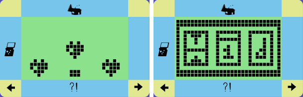
The two games: find the heart, and the lucky reels.
Find the heart
One of three hearts is hollow. Watch it, because the hearts are shuffled. When the arrow appears, move it
under the hollow heart with ◄/► and press ENTER.
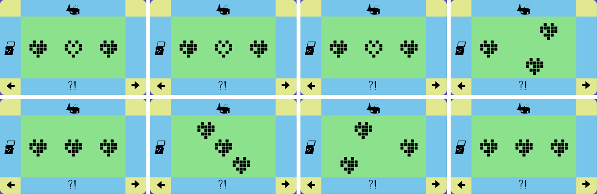
The hearts are shuffled; keep your eye on the hollow one.
Lucky reels
Three reels spin like a slot machine. Press ENTER to stop them.
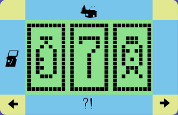
Games mostly affect IQ and stamina. In our tests a round raised or lowered them
depending on the result.
8. Cleaning
Open Clean (the rake) when the twins or their room are dirty: after they have digested a few meals,
or when the room is messy. They get a bath and are happy again. If nothing needs cleaning they just say
no.
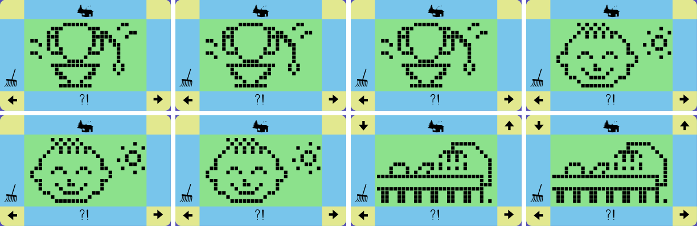
Bath time.
Leaving a mess costs money ($200 each time it builds up) and makes the twins ill.
9. The status meter
Open the Status meter (the dial). Its eight pages come up one after another. Browse with
◄/►, press ENTER to see the value, and
ESC to leave.
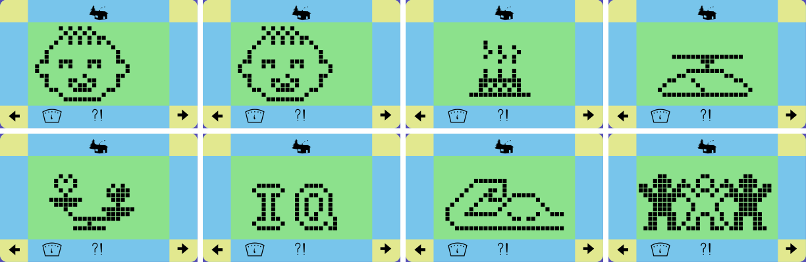
Page
Shows
Notes
Baby face
Growth
Adults show a special portrait here.
Birthday cake
Age
Shown as "YR" but counted in days: one toy day is one "year".
Scales
Weight in kg
Starts at 8 kg. Meals add weight; hunger and late bedtimes reduce it.
Flowers
Mood
Shown as 0–99. Each drops by one point a day on its own; raise them with games, outings and play.
IQ
Intelligence
Sneaker
Stamina
People
Friendship
Banknote
Money
Starts at $2400 (chapter 20).
Values for a new pair: age, weight 8 kg, mood 33, IQ 21, stamina 42, friendship 36, money $2400.
10. Outings
Open Outings (the little picture of someone at the seaside) to give the twins something to do.
Pick an activity with ◄/► and press ENTER.
At home the choices are:
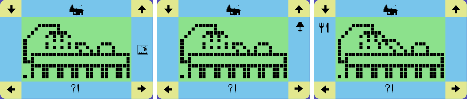
Watch TV · Listen to music · Read and learn.
Activity
Effect
TV
+ friendship− $100
Music
+ mood− $100
Reading / learning
+ IQ− friendship
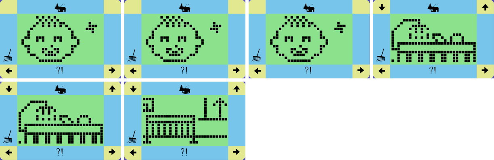
Music makes the twins happy.
Older twins, and twins out in town, get other activities. The program has twelve in total. We could
measure their effects but not all their names, so the names below are our best guesses:
Kind of activity
Effect
Work (three kinds)
+ money and + IQ, + friendship or + mood
Sport (three kinds)
+ stamina, and the tummy or thirst goes down
Hard work
+ $300− stamina
Party
+ 2 mood+ 2 friendship− $400
Lessons
+ 2 IQ− $200
Some activities include a small challenge. Get it right to earn the benefit; get it wrong and
it costs $100.
11. Light and bedtime
From 10 pm (22:00) the twins get sleepy. They yawn and ?! lights up. Open Light
(the lamp) and press ENTER to turn off the light and put them to bed. During the
day the lamp does nothing.
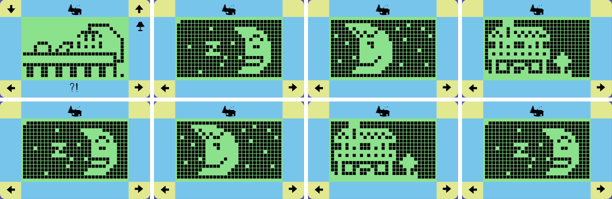
Lights out: the twins sleep under the moon and stars.
Time
What happens
from 22:00
Sleepy: "?!" and yawning. Time to turn off the light.
23:00
If you have not put them to bed they fall asleep by themselves, but lose 1 kg (a late night is not good for them).
Putting them to bed yourself gives +1 kg instead.
07:00
The alarm rings and the twins stretch.
08:00
They are up with an empty tummy, thirsty and 1 kg lighter, ready for breakfast.
Tip: The sleeping hours really are sleeping hours: at night the twins do not need
anything, so their day starts fresh in the morning.
12. The doctor
Twins who go hungry or live in a mess become ill. They look poorly and ?! lights up. Open the
Doctor (the medical bag) and an ambulance takes them to hospital, where they are cured.
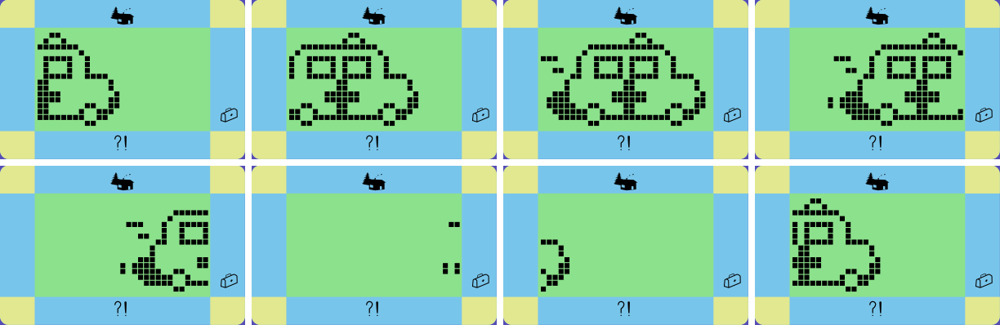
The ambulance comes for the twins.
Treatment costs $100 ($200 if they were very ill) and the twins come back a little weaker: stamina, IQ and
weight drop a bit, and after a serious illness mood does too. If they are not ill, the doctor is not needed and
they say no.
Illness gets worse every hour and costs money. If it is left too long, the twins collapse (chapter 17).
13. Going out
The twins can live their day at home, go to town (the office building icon) and, once they
are no longer babies, go to the running track.
Press ▲. The top row starts to blink.
Choose the destination with ◄/►.
Press ENTER to go. ▼ cancels.
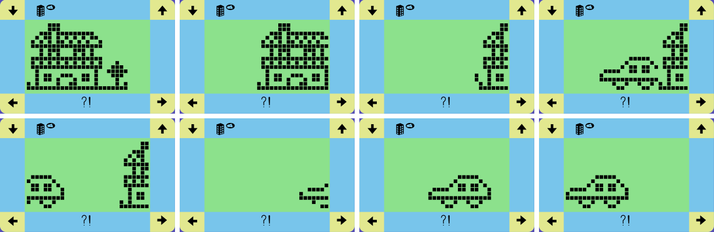
Off to town by car.
Where the twins are changes what they do and what the menus offer (food is different in town, for
example, and nobody eats at the running track). After 6 pm (18:00) the only destination is home, and at
8 pm (20:00) twins who are still out come home by themselves.
14. The attention call "?!"
The ?! icon lights up, with a beep when it first appears, whenever at least one of these is true:
Reason
What to do
Hungry (empty tummy)
Food: a meal.
Thirsty
Food: the middle choice (a drink).
Dirty, or the room is messy
Clean.
Ill
Doctor.
Money below $1000
Earn money with outings (work).
Bedtime (after 22:00)
Light off.
Just woken up (7–8 am)
Wait a moment, then breakfast.
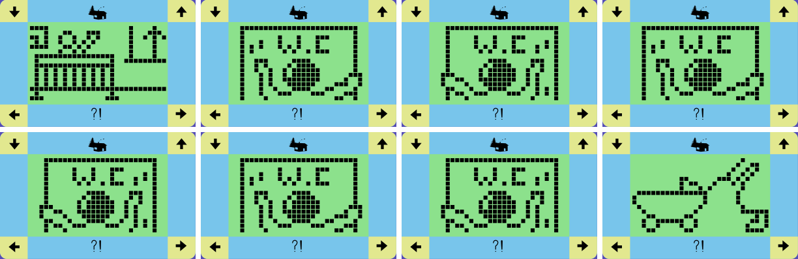
Something needs cleaning.
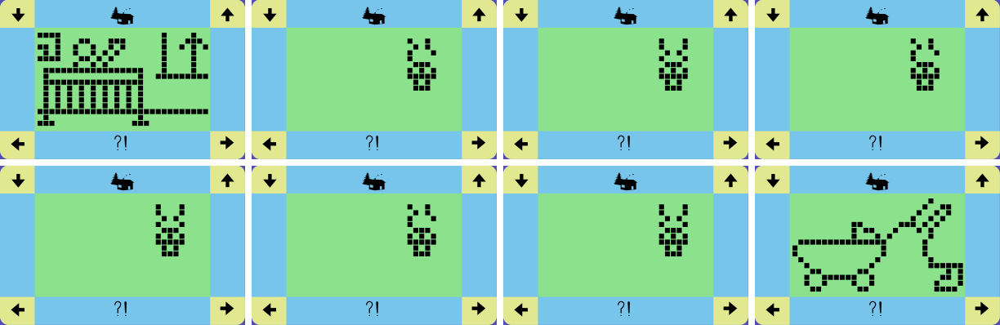
The twins are not well.
15. A day in the life of the twins
The twins' needs change with time. This is how the program ages them:
How often
What changes
Every 30 minutes
They get a little thirstier and lose a little stamina.
Every hour
A meal is digested and a little mess builds up. With an empty tummy
they lose stamina and weight and start to get ill instead.
When messy
Each time the mess builds up it costs $200 and makes them a bit more ill.
While ill
Every hour: a bit more ill, a little weaker in every way, and $200 goes to medicine.
Every day
A birthday: they are one "year" (day) older, and mood, IQ, stamina and friendship each drop by one point.
Once a day
For a while the room gets untidy and needs cleaning.
A good daily routine
8:00 Breakfast: a meal and a drink.
Morning Go to town or the running track, or play a game or have an outing.
Midday and afternoon A meal and a drink every few hours. Clean when "?!" asks for it.
Evening Home before 20:00, then music, TV or games.
22:00 Light off.
Tip: Check the status meter every day. Mood, IQ, stamina and friendship only go up
if you do something for them.
16. Growing up
Every 24 hours, counted from the moment the twins arrived, they have a birthday. A cake appears
and they grow a day ("year") older. As they get older they move on through four stages, and their home,
their games and what they do change with them:
When the twins arrive, the toy decides how many days they will stay: 23 to 26 days. When that day
comes the story ends with a farewell portrait of the twins as adults.
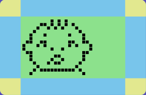
The farewell.
Press ESC+ENTER together to welcome a new pair of twins. The clock keeps its time.
17. When things go wrong
If the twins stay ill for too long (hungry, dirty, never visited by the doctor) or if the money runs out,
they collapse. The screen shows them lying down and no menus work.
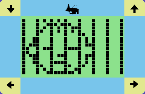
The twins have collapsed.
Emergency rescue
Press ESC and ENTERat the same time. The ambulance takes
them to hospital and they come back healthy. The rescue has a price: their money is reset to $2000 and
mood, IQ, stamina and friendship each drop by 7 points.
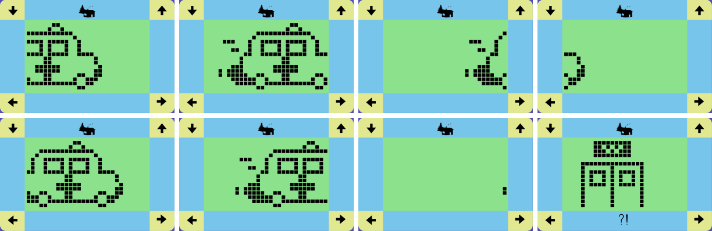
Rescued!
24 hours: if nobody rescues them within a day, the twins are gone for good. Then
ESC+ENTER starts a new pair.
If the buttons seem to do nothing
The twins may be in the middle of an animation: press again.
At night they are asleep and most things wait until morning.
If a password is set, the toy may be asking for it (chapter 19).
"CLOCK STOP" may be on: finish setting the clock with ESC … ENTER.
18. Playing with a friend (link)
Two Elfin Twins can be connected with a link cable so the twins can play against a friend's twins.
Link is available as soon as the opening story and name setup are finished and the twins are back on the
normal home screen; there is no age or growth-stage requirement. The ?! icon does not block Link.
If you want to clear the newborn hunger/thirst call first, give at least one meal and one drink.
Connect the two toys (or two Game Boy Advance systems, see chapter 21).
Leave both on the normal home screen. On one unit, open Link and press ENTER.
The other unit answers by itself and both show the link screen.
On the calling unit choose a game with ◄/► and press ENTER. Both units enter the same game.
After a game the link screen returns. Choose another game, or press ESC to disconnect.
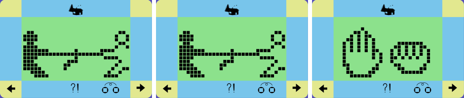
Tug-of-war · Rock-paper-scissors · Arm wrestling.
Tug-of-war on the calling toy…
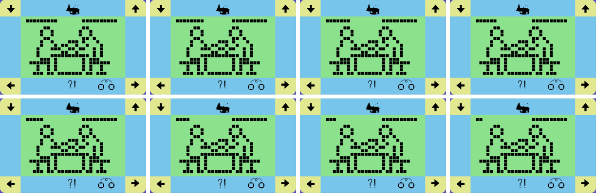
…and on the friend's toy at the same time.
Results affect the twins' care stats. Winning can raise IQ, stamina and friendship; losing can lower
some stats. A score such as "0 vs 0" is kept for the current link session.
If a connection fails, put both units back on the normal home screen, make sure neither is
asleep or setting/stopping the clock, and try again.
19. Clock, sound and password
The clock screen
Press CLOCK to see the time, with seconds and AM/PM. Press ESC
to go back. To set the time, see chapter 4.
Sound on and off
On the clock screen, ◄ turns the sound off (the bell disappears) and
► turns it back on.
The password lock
After the clock has been set, the toy asks for a NEW P.W. (new password): two digits.
◄ changes the first digit, ► the second, and
ENTER confirms.
00 means no password. Leave it like that if you don't need one.
With a password, the toy locks after 4 minutes without a button press. The next press asks for the
password, and only the right one gives access. Handy if you don't want anyone else playing with your
twins.
Write your password down. The program does not show it anywhere.
A secret from the programmers. If you sign the name SCD, two spaces, then TEST,
the toy starts in its factory test mode. On the home screen (with no menu icon lit)
ENTER then makes the twins a day older, ESC moves the clock on by
10 minutes and a long ESC changes their stage. It is fun for seeing the whole life
story quickly, but it spoils the real game.
20. Money
A new pair starts with $2400. Money pays for TV and music, the doctor and parties, and a mess in
the house costs money too. Work outings bring money in. Keep an eye on the banknote page of the status
meter: below $1000, "?!" warns you, and at $0 the twins collapse.
Costs
Earns
TV, music: $100 · doctor: $100–200 · parties: $400 · lessons: $200 · a mess: $200 · every hour of illness: $200 · strong drinks: $100
Work outings: +$100 each (hard work +$300). Emergency rescue resets money to $2000.
21. Game Boy Advance edition
The GBA edition runs the original program of the toy on an emulated copy of its microcontroller, so the
twins behave as on the real toy. It adds saving, living on while the GBA is off, a settings
menu and native GBA link-cable multiplayer.
On the GBA screen.
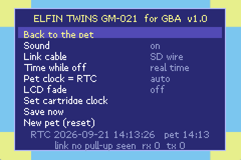
START opens the settings.
GBA
Toy button
A
ENTER
B
ESC
✚ D-pad
▲ ▼ ◄ ►
SELECTLR
CLOCK
A+B
ESC+ENTER (rescue / new twins)
START
Settings menu (the twins keep living while it is open)
While the GBA is off
With a flashcart that has a real-time clock, the twins keep living while the GBA is switched off.
At power-on the game works out how long it has been and lets the twins live through that time in a
few seconds, exactly as the toy would have done. So feed them before you switch off.
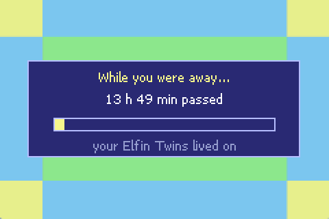
At power-on after a night away.
Game Boy Advance edition: settings
Setting
What it does
Sound
Buzzer on or off.
Link cable
GBA cable enables native GBA multiplayer; off disables linking.
Time while off
real time (the twins live on), max 1 day, or paused (nothing happens while off).
Pet clock = RTC
auto sets the toy's clock from the cartridge clock at every start, so you never set it by hand.
LCD fade
Off by default. When on, the dots fade in and out softly, like a slow LCD. The toy's program only draws plain on/off dots, so this is purely for looks.
Set cartridge clock
Set the flashcart's real-time clock.
Save now / New pet
Save immediately / start over.
The game saves by itself a few seconds after you press a button, and once a minute.
Game Boy Advance edition: link cable
The current GBA port uses the console's native multiplayer SIO mode. The original Elfin pulse-count
messages are carried as small logical messages over the GBA cable; no GPIO wire selection is needed.
Put the same current elfin-twins.gba on both flashcarts and connect the GBAs with a standard GBA link cable.
In settings, leave Link cable on GBA cable on both systems.
Leave both games on the normal home screen, then connect exactly as described in chapter 18.
Hardware tested: the native link handshake, game selection and linked play have been
verified on two real GBAs.
About elfin-linktest.gba
elfin-linktest.gba is a legacy GPIO/RTC diagnostic from the earlier link experiment. It is useful for
hardware investigation, but it does not exercise the current native multiplayer transport and is not required
for normal linking.
Troubleshooting
Problem
Try this
The other GBA never answers
Use the same current ROM on both systems, check the GBA cable, make sure Link is enabled, and leave both pets on the normal home screen before calling.
One side becomes extremely slow or freezes when a game is selected
Use the current build. Older native-link test builds could stall while waiting for a serial transfer; the current build yields that wait to the GBA serial/VBlank interrupts.
No time passes while off
Turn on the RTC for this game in the flashcart menu. Check "Time while off".
The pet is not saved
Use SRAM saving for this game in the flashcart menu. Some flashcarts only write the save to the SD card at the next start.
The pet clock is wrong
Set the cartridge clock (settings), and use "Pet clock = RTC: auto".
22. Who made Elfin Twins?
No box, leaflet or label naming the maker of the GM-021 has turned up. But the program inside the toy has a
signature. The last bytes before the end of its memory hold one line of text, which the toy never shows:
Sparkle Crystal Development Co.,Ltd. WangLaXian 1996.11.16
The credit as stored in the toy. Each letter is saved as its normal computer code plus 32, so the text does
not show up when you search the memory for words. Subtract 32 and it reads plainly.
Sparkle Crystal Development Co., Ltd. is most likely the company that wrote the program. The toy's
secret test name SCD TEST (chapter 19) matches its initials: Sparkle Crystal
Development.
WangLaXian looks like a Chinese personal name written in pinyin (Wang La-xian), almost certainly the
programmer who signed the work.
16 November 1996 is probably when the program was finished: about a week before the first Tamagotchi went
on sale in Japan, and months before the wave of virtual pets of 1997.
A chip from Sunplus
The toy's brain is a Sunplus SPLB20 chip. Its first kilobyte holds Sunplus's own factory test program, the same in
every SPLB20 toy we have looked at. At the factory, a tester could use it to check the screen, the buzzer, the memory
and the program itself before the chip went into a toy. One of its screen tests even writes
SUNPLU… across the display.
Factory screen tests: all segments on (left) and Sunplus's test picture (right), recorded by running
the test program on the emulator.
Still unknown. Nothing about Sparkle Crystal Development could be found online: not its
location, its other products, or what became of it. Of the thirty-odd toys dumped for the BrickEmuPy emulator, only
Elfin Twins carries this signature. Apollo Prince & Princess stores its letters in exactly the same way,
and 16 of its 26 letters are identical, but that is not enough to say it came from the same studio. If you own an Elfin
Twins in its box, the packaging may name the distributor. Company registries (for example Hong Kong's) could show when
the firm existed.
23. Quick reference
Menu (◄ ► then ENTER)
🍴 Food & drink: meals left/right, drink in the middle
🎮 Games: find the heart, lucky reels
🧹 Clean: when dirty or messy
⏲ Status meter: 8 pages
🔗 Link: play with a friend
🩺 Doctor: when ill
🏖 Outings: TV, music, reading, work, sport…
💡 Light: bedtime after 22:00
Buttons
▲ choose a destination · ▼ cancel CLOCK clock · hold: stop / set the clock
On the clock: ◄ sound off · ► sound on
Setting: ◄ hour +1 · ► minute +1 · ENTER start ESC+ENTER: rescue / new twins
The twins' day
08:00 up, hungry and thirsty
Out: before 18:00, back by 20:00
22:00 sleepy: light off
Light off on time: +1 kg · 23:00 they fall asleep anyway: −1 kg
07:00 the alarm rings
Life
Babies days 1–3 · children 4–8 · teenagers 9–15 · adults 16+
A birthday every 24 h
Stay: 23–26 days
Collapse: ill too long, or $0
Rescue: ESC+ENTER within 24 h
Elfin Twins GM-021 manual, reconstructed in 2026 from the toy's program with the BrickEmuPy
emulator (reverse engineering of the device by azya52; device provided by t.me/oksiniah) and the Game Boy Advance port in this
repository. Elfin Twins is the property of its respective owners; this is an unofficial fan document.